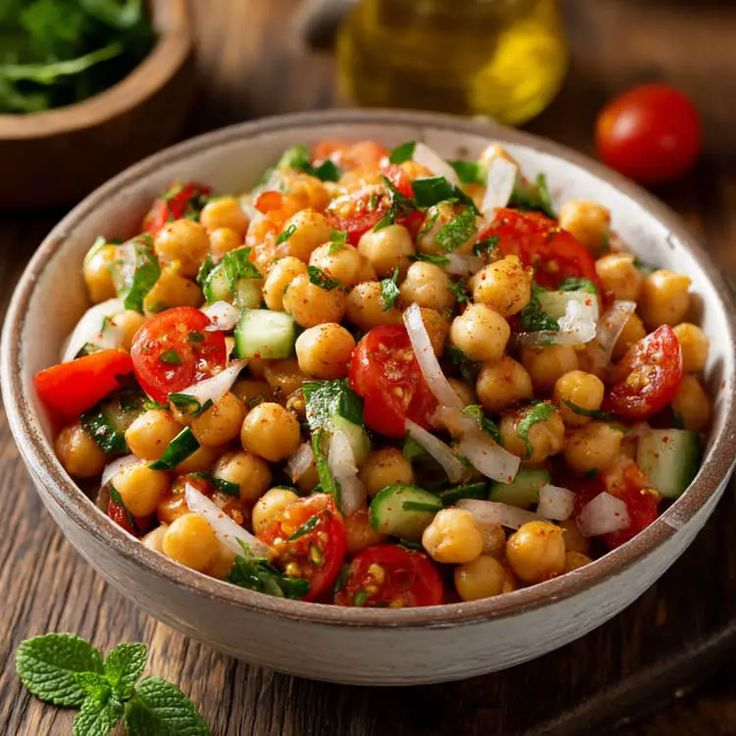

Lemon Peel Crinckle Cookie
Garden-to-table tips
- Avoid adding too much flour or the cookies may become scone-like
- The dough should be softer than typical biscuit dough
- Remove from the oven when the centres are slightly underdone, they will form up as they cool
Ingredients
- Peels from 2 lemon(boiled until soft)
- 100g sugar
- 60ml oil
- 1 egg
- 180g flour
- 1 tsp baking powder
- Icing sugar for rolling
Instructions
- Blend peels, sugar, oil, and egg until smooth.
- Mix in flour, baking powder and salt to form a soft dough.
- Chill for 30-60 minutes.
- If it's very sticky add 1 tbsp at a time.
- Roll into balls and coat well in icing sugar.
- Bake at 180°C for 10-12 minutes.
Spekboom Chutney

Garden-to-table tip
The slightly gooey texture of processed spekboom leaves lends itself to a flavourful, zesty and sticky chutney.
Ingredients
- 1 small red onion(finely chopped)
- ½tsp cumin seeds
- ½tsp brown mustard seeds
- ½tsp chilli flakes
- 1 tbsp vegetable oil
- 1 cup spekboom leaves
- ⅓ cup white wine vinegar
- 1 tsp salt
- ⅔ sugar
Instructions
- Fry the red onions, cumin seeds, mustard seeds and chilli flakes in oil in a pan over medium heat for 5 minutes until soft.
- Add the spekboom leaves and cook for 5 minutes.
- Add the vinegar, sugar and salt.
- Cook for 20 minutes on low heat until thickened.
Chickpea & Spekboom Salad

Ingredients
- 400g can chickpeas(drained)
- 1 tbsp Olive oil
- ½ tsp paprika
- ½ tsp salt
- ¼ tsp black pepper
- Handful spekboom leaves
- ½ cucumber(sliced)
- Handful sugar snap peas(sliced)
- Handful basil leaves
- ¼ red onion(thinly sliced)
- 50-80g feta(crumbled)
- 3 tbsp olive oil
- 1 tbsp red wine vinegar
- 1 tsp dijon mustard
- 1 tsp honey
- Salt and pepper to taste
For the crispy chickpeas
For the Salad
For the Vinaigrette
Instructions
- Toss chickpeas with the olive oil, paprika, salt and pepper. Air fry at 180°C for 20 mins, shaking halfway until crispy
- Whisk/shake together the olive oil, red wine vinegar, dijon mustard, honey, salt and pepper.
- Combine the spekboom, cucumber, sugar snap peas, red onion and basil in aserving bowl.
- Top with feta and crispy, cooled chickpeas.
- Drizzle over the vinaigrette and serve immediately.
Basil & Nasturtium Pesto

Garden-to-Table Tip
Making pesto in a mortar and pestle bruises the herbs instead of cutting them, creating a beautifully textured pesto with a richer, fresher flavour.
Ingredients
- 15g Fresh Nasturtium leaves
- 15g Fresh Basil leaves
- 30g Toasted Cashew
- 15g Grated Parmesan
- 2 Garlic Cloves
- 60ml Extra Virgin Olive Oil
Instructions
- Toast Cashews for 2-3 minutes.
- Crush the garlic and salt into a smooth paste.
- Add the toasted Cashews and grind until finely crushed.
- Add the basil and nasturtium a handful at a time, grinding until they form a coarse paste.
- Mix in the Parmesan
- Slowly drizzle in the olive oil while stirring ubntil the pesto reaches your desired consistency.
- Finish with a generous squeeze of fresh lemon and black pepper.
Garden Salad

Ingredients
- Fresh lettuce leaves
- 1 celery stalk(finely chopped)
- ¼ red onion(finely chopped)
- 1 kanzi apple
- Juice of ½ lemon
- 2 pinches cracked black pepper
Instructions
Mix everything together and serve immediately